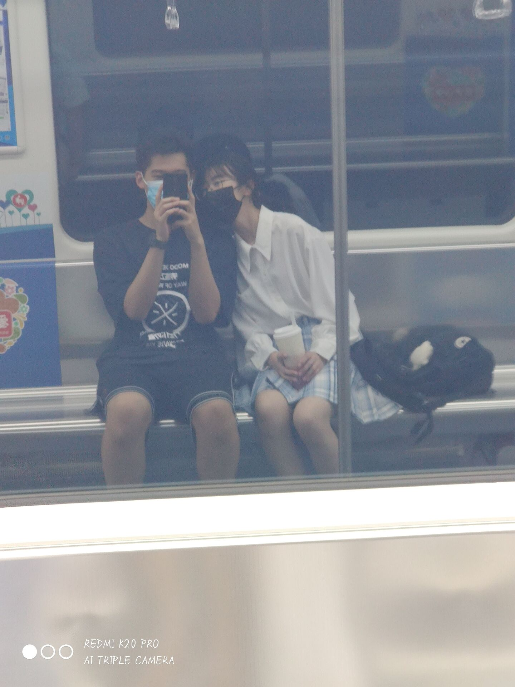

2022.4.5原来我已经这么久没有更新了啊，说实话，其实我也不知道我想写一些什么。距离我们俩在一起已经过了292天了，时间真的过的很快啊。在这段时光里，我们俩养了一只崽崽，他现在还在睡觉呢。也吵过架，发生过很逗矛盾，但很庆幸，你没有因为那些事丢下我。我想了很久，还是决定把那些恋爱的小欢喜留到日后再与你分享。谈恋爱一起成长其实很重要，因为以后会遇到很多人很多事，这都是我们俩无法掌控的事情。在目前，我们俩唯一能做的只有好好学习，只有只要，我们俩才能有底气去面对生活的柴米油盐。但距离高考也只剩63天了，我们俩都知道，这63天会很累，日子往往就在不经意间溜走的，就算再累，也就只剩63天了。这次我家小朋友考的还不错，但是也只是局限在班级里，因为这个分数其实也只能勉强上个211。不过我和我家小朋友差距还是有点大啊，我会不断努力争取追上你的。所以其实我希望，在这63天里，你不要被世俗所困，不要把我放在第一位，我们俩每个人过好自己的生活，各自努力（当然我会找你问问题的）所以这也就意味着不要想着亲亲抱抱，也不要摸摸头，不要有任何肢体接触，虽然这只是一点小事，但是人的欲望是无穷的，控制好自己的办法就是斩草除根，所以不要有肢体接触,也不要老想着我！我也会管好我自己的! 我不知道你你看到这封信会不会有点失望，但我也很抱歉，因为我们俩不是站在山巅上的人，高考也还尘埃落定，我们俩仍能奋力一搏。我希望你不要因为这个看上去还不错的成绩沾沾自喜亦或者是摆烂，因为我们俩现在就是井底之蛙，是因为那些人太烂了，才显得我们俩看起来还不错，但我相信这个成绩肯定不是你的巅峰，所以我们每个人都有努力的理由。距离高考只剩63天了，过完今天，再无假期，这个过程或许很累，但我们俩是在一起努力的。不管结果如何，我想我们俩都应拼尽全力，去看一看自己的极限。
2022.1.6我现在好点啦，来更新一下。www，今天看某个小朋友一个人坐真的好心疼，可是我没有想到clp会不和wsy坐，真的非常对不起啊，又让你不开心了。但现在高三，有很多事情我们都身不由己，平时还是应该低调一点啊。以后大家可以各干各的事，我们俩一起加油，争取拿到一模一样的通知书。我相信我们俩一定可以的！后面会有很多困难，但不管发生什么事，先以学业为主，我们俩都收敛一下自己的脾气，努力做的更好，我知道控制自己是一件很难的事情，但我们两可以慢慢来，我相信我们俩会做到的。在学校不可以有肢体接触！【叉腰】这段时间发生了很多事，我们俩也经常吵架，但很庆幸，兜兜转转我们依旧还是我们。最后，不管怎么样，我都喜欢你。
我不知道你会什么时候看到这个网站的更新，剩下六个月会很难熬，但只有我们俩坚持过去，大家才能在高处相遇。在这六个月里，如果我和别的男生说话，希望我家小朋友不要生气，我保证我不会喜欢上别人，在高考结束之前只喜欢你一个人，高考结束之后也是。我永远都只是你一个人的小朋友，你也只能是我家的小朋友！
这一百多天，在某个笨蛋的陪伴下，我真的很开心，他真的是个很合格的对象，我也好喜欢他，但我不够好，我做不到兼顾学习和恋爱，所以某个笨蛋要等他家小朋友六个月
高考考完的那天下午，我们俩就一起出去玩，一起睡觉觉叭。等到了法律结婚年龄，你就来娶我好啦
2021.11.19宝贝在学校上晚自习，从今天开始我就得自己认真写作业了，今天是不能找我家小朋友玩的第一天，好想他，wwwhile
2021.8.23好耶，今天去找大帅哥玩了，但是再也不能相信他了，他太过分了，www
2021.8.21yjy是大骗子，再也不相信他了
2021.8.19哼，某人又惹我生气了凌晨一点然后某人写了点东西
凌晨一点（看腻了也得看，写的不好也得看） 当她说出我接下来要做的事时，从来没有为一个女孩子哭过的我，就忍不住了。我发现我从来没有那么用心去谈过一段恋爱或是关心过一个女孩子，从来没有......这一天，那片星空下，那个吻，是初恋的味道。我看到了一个同是十七岁女孩子的真诚无瑕的爱与信任，看到了一个愿意给你一切而毫无保留的傻子。她是我见过的最真实的女孩子，没有之一，也许她并不是那么感性，并不是那么浪漫。也许正是这样，她才满足了我对初恋的所有幻想。谢谢你，小傻瓜。过去的十小时，一定是我十七岁中最美妙的一段历程。最后，也许并不成熟，但认真的，我爱你。
2021.8.18今天看日落失败了，只看见了夜景，有一点点遗憾
2021.8.14是的，我至今为止，没有学会怎么空行，我也不知道某人有没有偷偷来翻过找个网站。然后我今天更新了，没想到叭！
唔，我们俩好像也谈了很久的恋爱了，某个小朋友也越来越喜欢吃醋了【有一点点头疼，吃醋了记得告诉我】但还是最喜欢你啦！
原来某人也会怕痒的啊，欸嘿嘿，你脸红的时候真的好可爱！好多时候都好像大狗狗，就非常可爱！
我果然不适合写这种东西，我写的一点逻辑都没有，难过了。已经一点多了，突然有点困，睡觉啦，晚安！
2021.7虽然它看起来很简陋，但我买了一年的域名（挺便宜的啦），可以高考结束再慢慢弄.所以前两天我一直和你说我在忙，在忙，就是因为这个啦，本来以为很简单的，但还是弄了挺久的。
作为一个理科生来说，我确实是真的很不擅长写情书这种东西，我也没有想过我人生中第一次写情书居然是混在一堆代码里面敲出来的。其实本来想网上搜罗一些扔这任你挑选，后来想想确实好没有诚意，所以虽然现在已经半夜了，虽然我对你7.7晚上的行为表示不开心，但我还在很认真地写这封情书。
开学第一天就迟到确实是很令人头秃的一件事啊，可能因为我高二上和我们班同学都不是很熟，所以我们俩高二上好像也没有特别熟，以致于我一直以为你是个直男。（现在看来完全不是）我从小到大都是那种只要我自己愿意就可以和大家混的比较熟的人，所以其实我完全不记得很多细节，比如大家出去玩是什么时候又或者注意到你比较孤独。在我印象中，我们俩的第一次交集应该是我情绪崩溃的那天晚上正好在走廊里遇到你。当时只是想找个同学帮忙看一下我哭的有没有很明显，特别巧地遇到了你，虽然后来不知道为什么我越哭越明显。第二次令人印象深刻的应该是运动会的大型丢人现场，真的是非常丢人啊，非常感谢大帅哥没有嫌弃我，也没有丢下我，yjy真的是一个很有责任心的人呢！
听说你想知道我什么时候想谈恋爱的？
实话就是在看《多啦A梦》的时候啦！当时我就觉得其实和我旁边的这个人谈恋爱也挺好的，虽然我真的觉得你后面那几周是在玩玩。所以我说有推荐的人选吗，你回我“我推荐我自己可以吗”的时候其实我是愣了一下的。因为很多人都只想和我玩玩，所以当时我其实还是挺开心的。
我高中本来确实没有打算谈恋爱的，然后遇见了你。在这之前我想了很多种可能，一本正经地列了很多条条框框的东西，然后你的出现打破了那些东西。我一直都是一个敏感多疑，没有安全感，喜欢乱想，生气或者不开心也不会承认的人，但很幸运能遇到你。如果哪天你生气了，一定要记得告诉我，我会来哄你的【害羞】
在和你谈恋爱之前，我一直都坚持如果我以后谈恋爱了，绝对不会像普通情侣那样庸俗，结果就...就真香了，做一对普通的情侣也挺好的。
www,谈恋爱以后才发现男孩子都是大狗狗，虽然但是我对象好可爱
——纵使人山人海，我也希望，下一刻我首先拥抱到的只有你。